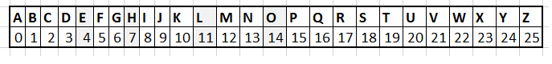

¿Que es TxtCucho?
Somos una plataforma que busca enriquecer el ambiente laboral desarrollando soluciones en base a las opiniones y/o reclamos de lxs funcionarixs de las distintas empresas que trabajan con nosotrxs, las cuales encriptamos para mantener su privacidad a salvo.
¿Como puedo asegurarme de que no sabran quien soy?
Contamos con un sistema de cifrado de maxima seguridad que asegura la confidencialidad absoluta de los testimonios e identidad de lxs trabajadorxs.
¿Como cifran texto?
Ocupamos el metodo de Cifrado Cesar, una de las primeras modalidades de
encriptado conocidas, creada por el Emperador romano Julio Cesar.
Este es un tipo de cifrado por sustitución, es decir que cada letra del texto original
es reemplazada por otra que se encuentra un número fijo de posiciones mas
adelante en el mismo alfabeto
En esta imagen podemos ver como funciona el cifrado; la letra "B" es desplazada 3 espacios
hacia la derecha y es reemplazada por la letra "E".

Instrucciones
Ingresa el texto y selecciona el número de espacios para desplazar el lugar de las letras.
- Solo se permiten letras mayusculas.
- No se admiten "Ñ", ni ningun otro caracter que no sea una letra.
